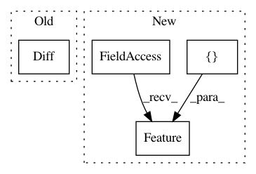

36ce3c300172390d702a614b5784332b8b56343a,featuretools/tests/primitive_tests/test_transform_features.py,,test_arithmetic_of_transform,#Any#,313
Before Change
def test_arithmetic_of_transform(es):
diff1 = Diff(IdentityFeature(es["log"]["value"]),
IdentityFeature(es["log"]["product_id"]))
diff2 = Diff(IdentityFeature(es["log"]["value_2"]),
IdentityFeature(es["log"]["product_id"]))
to_test = [(Add, [np.nan, 14., -7., 3.]),
(Subtract, [np.nan, 6., -3., 1.]),
(Multiply, [np.nan, 40., 10., 2.]),
After Change
// P TODO: rewrite this test
def test_arithmetic_of_transform(es):
diff1 = ft.Feature([es["log"]["value"], es["log"]["product_id"]], primitive=Diff)
diff2 = ft.Feature([es["log"]["value_2"], es["log"]["product_id"]], primitive=Diff)
to_test = [(AddNumeric, [np.nan, 14., -7., 3.]),
(SubtractNumeric, [np.nan, 6., -3., 1.]),
(MultiplyNumeric, [np.nan, 40., 10., 2.]),
In pattern: SUPERPATTERN
Frequency: 3
Non-data size: 4
Instances
Project Name: Featuretools/featuretools
Commit Name: 36ce3c300172390d702a614b5784332b8b56343a
Time: 2019-01-18
Author: kmax12@gmail.com
File Name: featuretools/tests/primitive_tests/test_transform_features.py
Class Name:
Method Name: test_arithmetic_of_transform
Project Name: Featuretools/featuretools
Commit Name: 36ce3c300172390d702a614b5784332b8b56343a
Time: 2019-01-18
Author: kmax12@gmail.com
File Name: featuretools/tests/primitive_tests/test_transform_features.py
Class Name:
Method Name: test_diff
Project Name: Featuretools/featuretools
Commit Name: 36ce3c300172390d702a614b5784332b8b56343a
Time: 2019-01-18
Author: kmax12@gmail.com
File Name: featuretools/tests/primitive_tests/test_transform_features.py
Class Name:
Method Name: test_diff_single_value